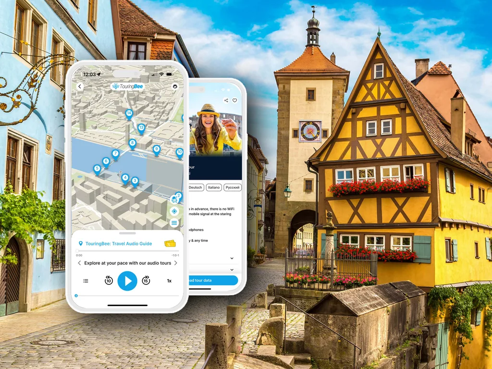

Rothenburg in giornata da Monaco di Baviera: treno, auto e tour
Tre ore per tratta, e due regole del biglietto che decidono tutta la giornata.
Prenda l'audioguida I conti Risposte rapideIn breve
- In treno
- 2h30 nel migliore dei casi, più spesso 3h30, da uno a tre cambi
- In auto
- Circa 2h20, e la città sta a 5 km dalla A7
- Il biglietto economico
- Bayern-Ticket 34 € per tutta la giornata — ma solo treni regionali, e in settimana non prima delle 09:00
- Tariffa flessibile
- Circa 50 € per tratta. Sui treni veloci le tariffe anticipate costano di solito meno
- Cosa ottiene
- Dalle tre alle sette ore in città, un po' di più se parte presto in auto
- Il verdetto onesto
- Si può fare, e a dicembre riesce meglio che a giugno
Rothenburg ob der Tauber è una delle città più fotografate della Strada Romantica tedesca, e una delle gite in giornata più comuni da Monaco di Baviera. È anche a circa tre ore per tratta, ed è la parte che la maggior parte degli itinerari salta in silenzio.
Questa pagina fa i conti: quanto prende davvero ogni opzione, quanto costa e quanta città le resta una volta pagato il viaggio. Non finge che la risposta sia sempre sì.
Tre modi per farla: il treno, l'auto o un pullman organizzato che le toglie di mano la pianificazione — può vedere quali gite in giornata partono da Monaco di Baviera già adesso, se è quella la risposta che cerca.
Se sta ancora decidendo se venire, la guida completa a Rothenburg è il punto di partenza; se ha già deciso, il piano ora per ora per un giorno è quello da leggere dopo.
I conti, prima di ogni altra cosa
A Rothenburg non c'è stazione sulla linea principale. Ogni percorso in treno finisce uguale: cambio a Steinach (b Rothenburg) per una linea secondaria che passa ogni ora e dura 15 minuti.
Come arriva a Steinach è ciò che distingue le opzioni in treno. L'auto ignora Steinach del tutto. Le due cifre ferroviarie qui sotto vanno da Monaco di Baviera a Rothenburg, da stazione a stazione; quella dell'auto è tempo di guida e non comprende la camminata dai parcheggi.
- Percorso rapido, tariffa flessibile. ICE fino a Norimberga, poi Ansbach e Steinach. Circa 2h30 nel migliore dei casi, con tre cambi. Circa 50 € per tratta con un biglietto flessibile.
- Percorso regionale, biglietto economico. Treni regionali per tutto il viaggio, di solito 3h30 e anche tre cambi. Alcuni RE80 proseguono senza cambi da Monaco di Baviera a Steinach, portano il viaggio a circa 3h15 e le lasciano un solo cambio — a Steinach, per la linea secondaria.
- In auto. Circa 2h20, via A9, A6 e A7, e la città sta a 5 km dalla A7.
Quindi in treno andata e ritorno le costano tra le cinque e le sette ore. In auto si scende verso le quattro e mezza. D'estate, in entrambi i casi, resta un pomeriggio utilizzabile. Ed è il motivo per cui questa pagina torna sempre sulla stessa domanda: cosa resta?
La trappola del Bayern-Ticket
Questa è la parte da leggere due volte: è qui che la maggior parte delle gite si rovina prima di partire.
Il Bayern-Ticket costa 34 € per una persona in seconda classe, e su un solo biglietto possono viaggiare fino a cinque persone — 44 € in due, 54 € in tre, 64 € in quattro, 74 € in cinque. È un biglietto giornaliero, quindi quel prezzo copre l'andata e il ritorno. Contro una tariffa flessibile di circa 50 € per tratta — circa 100 € per andata e ritorno — chi viaggia da solo risparmia quasi due terzi, e una famiglia molto di più.
Si porta dietro due condizioni, e insieme decidono la sua giornata.
Non vale sui treni veloci. Niente ICE, niente IC, niente EC. Questo esclude del tutto il percorso da 2h30 e la mette su quello da 3h30.
Nei giorni lavorativi non vale prima delle 09:00. Dal lunedì al venerdì comincia a valere alle nove del mattino e vale fino alle 03:00 del giorno dopo. Il sabato, la domenica e nei giorni festivi vale dalla mezzanotte, con la stessa chiusura alle 03:00.
Una terza condizione decide chi può usarlo: ogni viaggiatore va indicato sul biglietto per nome prima del primo viaggio. Non può comprarne uno per cinque e sostituire qualcuno più tardi.
Metta insieme le prime due e la gita infrasettimanale si riduce a una cosa precisa: partenza da Monaco di Baviera non prima delle 09:00, arrivo a Rothenburg verso le 12:30, ed è arrivato nel mezzo della parte più piena e più piatta della giornata — le ore che il resto di questo sito le dice di evitare.
Nel fine settimana la trappola sparisce. Il biglietto vale dalla mezzanotte, così una partenza alle 07:00 la porta in città verso le 10:30 e la giornata intera costa 34 €. Meglio ancora partire prima, però: le 10:30 sono il punto in cui la parte affollata della giornata comincia, non quello in cui finisce.
Quindi, in un giorno lavorativo con il Bayern-Ticket: economico o presto, ne scelga uno — a meno che vada di sabato, e allora può avere entrambi.
C'è una terza risposta, ed è quella che la maggior parte delle pagine si perde. Le tariffe anticipate di Deutsche Bahn, lo Sparpreis, si vendono sui treni veloci e non portano né la regola delle 09:00 né quella dei soli regionali. Di solito costano meno della tariffa flessibile. Ai 34 € del Bayern-Ticket arrivano raramente — ma ricomprano il percorso rapido e la partenza presto, che in un giorno lavorativo è proprio quello che 34 € non danno. Il rovescio del prezzo è questo: la tariffa anticipata è legata al treno a lunga percorrenza stampato sopra. Da Monaco di Baviera quello è la prima tratta, quindi a proteggere il biglietto è arrivare presto in stazione, non il margine più avanti nel percorso; una coincidenza persa dopo di quella le costa un'ora, non la tariffa. I prezzi variano con la data e col treno: controlli la sua.
In treno, nel dettaglio
La linea secondaria è il punto fisso. Da Steinach a Rothenburg, ogni ora, 15 minuti, con l'RB82. Tutto il resto riguarda come arriva a Steinach.
Da Monaco di Baviera. O il percorso rapido via Norimberga e Ansbach, o treni regionali per tutto il viaggio. Cerchi gli RE80 che proseguono fino a Steinach: un cambio invece di tre in entrambi i casi, e anche circa quindici minuti in meno del percorso regionale con coincidenze.
Controlli l'ultimo treno di ritorno prima di pianificare la sera. La linea secondaria passa ogni ora e di sera i ritorni da Steinach si diradano. È quella singola partenza a decidere se vedrà o no l'ora tranquilla della città, ed è la prima cosa da cercare, non l'ultima.
Il Deutschland-Ticket a 63 € al mese copre gli stessi treni regionali senza limiti di orario e senza la regola dei giorni lavorativi. Per una persona sola due giornate di Bayern-Ticket costano già più dell'abbonamento, quindi si ripaga in fretta. Ma è mensile e vale per un viaggiatore invece che per cinque: per un gruppo non è una risposta.
In auto
Circa 2h20 da Monaco di Baviera, via A9, A6 e A7, con il centro storico a 5 km dalla A7.
Sul costo, l'auto conviene di più quanto più è piena. In due, un Bayern-Ticket da 44 € è difficile da battere già solo sul carburante. Ma un'auto costa lo stesso chiunque ci sia dentro, mentre il biglietto sale di 10 € a testa — così il divario si assottiglia a ogni viaggiatore in più, e in cinque, a 74 €, l'auto torna in gioco. Quello che l'auto compra davvero, però, non sono i soldi. È l'ora in cui parte.
Parcheggiare è semplice, a patto che l'auto resti fuori dalle mura. I parcheggi P1–P5 costano 1,30 € l'ora, con un massimo di 8 € al giorno, a pagamento 09:00–18:00 e gratis fuori da quell'orario. Non c'è alcun limite di tempo.
Dentro le mura non è semplice. Le piazzole di sosta breve costano 2,00 € l'ora, a pagamento tutti i giorni 08:00–20:00 — una fascia più ampia che fuori — con un massimo di due ore, e per una visita in giornata non servono. Nel centro storico si può entrare in auto: non c'è un divieto generale diurno. Semplicemente, chi viene in giornata non ha un motivo pratico per farlo.
Due cose da sapere prima di partire. Dai 2,85 m in su nel centro storico non si entra senza una HöhenVignette, e anche con quella il tetto resta 3,90 m. E il suo navigatore probabilmente non conosce la rete dei vicoli: punti a un parcheggio e non a un indirizzo dentro le mura.
L'unica data che mette in difficoltà chi guida
Mentre va il mercatino di Natale, dal 20 novembre al 23 dicembre, nei fine settimana il centro storico chiude al traffico — il sabato 14:00–18:00 e la domenica 11:00–18:00, residenti esclusi. Questo chiude i vicoli, non i parcheggi fuori dalle mura: un'auto lasciata fuori non ne è toccata.
Quello che la riguarda è che in un sabato di mercatino quei parcheggi si riempiono entro l'ora di pranzo, e alle porte si forma la coda. Quindi arrivi prima delle 11:00 o dopo le 16:00 — e per quello che consiglia questa pagina, dopo le 16:00 è la scelta migliore. Parcheggia mentre chi è venuto in giornata va via ed entra a piedi nell'ora illuminata, invece di passare cinque ore nel mezzo affollato della giornata.
Gite organizzate
Se preferisce non montare il viaggio da sé, confronti le gite organizzate in giornata da Monaco di Baviera, Francoforte e Norimberga. Risolvono il problema degli orari togliendoglielo di mano: un pullman di solito le lascia dalle tre alle cinque ore libere in città, più o meno tra le 10:30 e le 16:00.
È questo lo scambio. Non ha la prima mattina e non ha la sera, che sono i due capi della giornata per cui vale mettersi in viaggio. In cambio guida qualcun altro e non rischia di perdere l'ultimo treno.
Una cosa su cui non fare piani: l'autobus di linea della Strada Romantica. Un servizio sulla Strada Romantica esiste in qualche forma da decenni, ma percorso e stagione cambiano quasi ogni anno, e nelle ultime stagioni ha coperto solo parte del tragitto e solo in certi giorni. A ottobre 2026 la pagina turistica della città rimanda ancora a un orario superato. Se conta per il suo piano, lo verifichi direttamente.
Cosa ottiene davvero
Un pullman la mette a Rothenburg più o meno tra le 10:30 e le 16:00. Con il Bayern-Ticket in settimana la mette lì da circa le 12:30. Un treno presto sul percorso rapido, o l'auto, la portano prima delle 10:00.
La differenza tra queste non è quante cose spunta dalla lista. La città è abbastanza piccola che in quattro ore si fanno le mura, la piazza e un museo. La differenza è se si prende la città per sé ai due capi della giornata, o soltanto il suo mezzo affollato.
In estate una gita in giornata non può vincere quella partita. Chi viene in giornata se ne va davvero verso le 16:00, quindi la città vuota c'è — ma la luce che rende degno il viaggio non arriva prima delle 21:00 circa, quando il sole tramonta. E a chiudere la sua giornata non è il biglietto, che vale fino alle 03:00: è l'ultima coincidenza utile da Steinach. La cerchi per la sua data prima di decidere altro. Se viene a giugno, controlli quanto costa una notte prima di impegnarsi con andata e ritorno.
A dicembre può. Il tramonto più precoce dell'anno è alle 16:20, l'11 dicembre, ed è allora che comincia l'ora illuminata. Chi riparte in giornata alle 17:30 ci arriva. Una cosa, però, un pullman non la può fare: la sua fascia chiude alle 16:00, venti minuti prima dell'ora per cui è venuto. Il caso completo sta in Rothenburg in inverno.
L'alternativa, detta chiaramente
Una notte cambia i conti, perché le due ore che giustificano il viaggio sono la prima mattina e il dopo buio. La mattina che vale è quella delle 07:30 — il Plönlein prima del primo pullman — e quella è di chi ha dormito qui. Nemmeno la sera si raggiunge, tranne in pieno inverno, quando arriva abbastanza presto da prenderla.
Se le sembra il viaggio che vuole, guardi cosa c'è di libero. Dove dormire spiega la scelta tra dormire dentro le mura o fuori, e perché la decide il fatto che arrivi in auto.
Se una gita in giornata è quello che ha, se la prenda. Solo, se la prenda d'inverno, o di sabato, o in un'auto che parte presto.
Sapere cosa si sta guardando
Qualche ora in una città raggiunta dopo tre ore di viaggio non è il momento per leggere targhe.
Perché le mura hanno due cinte? Cosa è successo qui nel 1945, e di chi sono i nomi incisi nelle sue pietre? Quale leggenda recitano le figure dell'orologio a ogni ora? E chi era Toppler?
I testi li scrivono degli storici, ed è per questo che le risposte sono precise e non la riga unica che le dà una targa.
25 tappe, circa 90 minuti, una mappa offline che le mostra dov'è e tracce audio che avvia lei a ogni punto — in una giornata compressa conta più che in una lenta.
25 tappe · circa 90 minuti · 8 lingue · completamente offline · da 9,99 €

Rothenburg a piedi — audiotour autoguidatoAccesso immediato
- 100% offline — senza Wi-Fi né dati
- Mappa GPS offline — ogni traccia la avvia lei sul posto
- 25 tappe dal Marktplatz alla Hospital Bastion
- Da percorrere in 1,5–2 ore, al suo ritmo
Note pratiche
Tariffe e condizioni dei biglietti verificate sul portale bavarese di Deutsche Bahn in ottobre 2026. Parcheggi e limite di altezza dal regolamento comunale sulle tariffe, versione del 31 luglio 2025. I tempi di percorrenza da una guida ferroviaria aggiornata al 2025. Orari e prezzi cambiano — controlli la sua data prima di partire.
Prenoti il Bayern-Ticket per il gruppo, non a persona. In cinque si viaggia con 74 €, in due con 44 €. Scriva il nome di ogni viaggiatore sul biglietto prima di salire; dopo non si sostituisce nessuno.
Cerchi l'ultimo treno prima di prenotare qualsiasi altra cosa. È lui a dare la forma alla giornata.
Metta la linea secondaria dentro il suo piano. Da Steinach a Rothenburg si va ogni ora, quindi una coincidenza persa a Steinach costa un'ora piena.
Non conti sul deposito bagagli alla stazione di Rothenburg. Se è di passaggio con i bagagli, venga in auto, oppure chieda al ristorante dove mangia se glieli tengono.
Contanti. La torre del municipio prende solo contanti, e così diversi posti più piccoli.
Scarpe. Tutto il centro storico è selciato medievale, e sul camminamento delle mura le tavole sono irregolari.


In sintesi
In treno sono circa tre ore per tratta, in auto circa 2h20. Il Bayern-Ticket taglia la tariffa di circa due terzi e, in settimana, le costa la mattina; una tariffa anticipata sul percorso rapido gliela ricompra. Un pullman organizzato le consegna la fascia 10:30–16:00 e le toglie la decisione — guardi cosa c'è nelle sue date — ma quella fascia si chiude prima dell'ora di dicembre che questa pagina consiglia.
Niente di questo rende sbagliata una gita in giornata. La rende un viaggio da costruire a partire dall'ultima coincidenza, e da fare a dicembre o ai primi di gennaio, quando l'ora che vale arriva prima che debba ripartire.
Domande frequenti
Si può fare Rothenburg in giornata da Monaco di Baviera?
Sì. In treno sono circa da 2h30 a 3h30 per tratta e in auto circa 2h20, e restano dalle tre alle sette ore in città, un po' di più se parte presto in auto. Funziona meglio d'inverno, quando l'ora tranquilla cade prima che debba ripartire, e nel fine settimana, quando il biglietto economico non ha il limite della mattina.
Come si arriva da Monaco di Baviera a Rothenburg in treno?
Tutti i percorsi cambiano a Steinach (b Rothenburg) per una linea secondaria che passa ogni ora e dura 15 minuti. Da Monaco di Baviera si prende o il percorso rapido via Norimberga e Ansbach, circa 2h30 con tre cambi, o treni regionali per tutto il viaggio, circa 3h30. Alcuni RE80 proseguono fino a Steinach e lasciano un solo cambio.
Quanto costa il treno da Monaco di Baviera a Rothenburg?
Circa 50 € per tratta con un biglietto flessibile, quindi circa 100 € per andata e ritorno. Un Bayern-Ticket costa 34 € per tutta la giornata e 74 € per cinque persone, ma vale solo sui treni regionali e, in settimana, solo dalle 09:00. Sui treni veloci le tariffe anticipate costano di solito meno di quella flessibile, anche se sono legate al treno che prenota.
Conviene il Bayern-Ticket per Rothenburg?
Per un gruppo, chiaramente. Per una persona sola in un giorno lavorativo taglia la tariffa di circa due terzi, ma impone la partenza alle 09:00 e il percorso più lento, cioè un arrivo verso le 12:30. Il sabato o la domenica vale dalla mezzanotte e lo scambio sparisce.
Quanto si mette in auto da Monaco di Baviera a Rothenburg?
Circa 2h20, via A9, A6 e A7. La città sta a 5 km dalla A7, e i parcheggi P1–P5 fuori dalle mura costano 1,30 € l'ora, con un massimo di 8 € al giorno.
Quante ore servono a Rothenburg?
In quattro ore si fanno le mura, la piazza principale e un museo. Con sei o otto la giornata diventa comoda, più di quanto lasci la maggior parte delle gite da Monaco di Baviera — è questo lo scambio. Più del totale conta quali ore sono: le tranquille sono prima delle 10:30 e dopo le 16:00.
Conviene pernottare a Rothenburg?
Sì, se la scelta è sua, perché la prima mattina e l'ora dopo la chiusura dei negozi sono le due a cui una gita in giornata arriva a fatica. In pieno inverno lo scarto serale si chiude quasi del tutto, perché l'ora illuminata comincia alle 16:20, l'11 dicembre.
Continui a esplorare
Alcuni link in uscita da questo sito sono affiliati. Se prenota tramite uno di essi possiamo ricevere una commissione, senza costi aggiuntivi per lei.
Tre ore per tratta — faccia contare le ore che le restano
Venticinque tappe, circa novanta minuti, scritte da storici e completamente offline.
Prenda l'audioguida — da 9,99 €